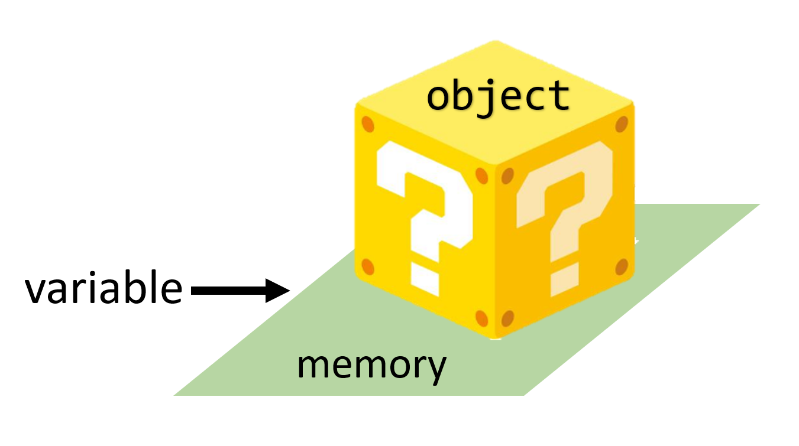
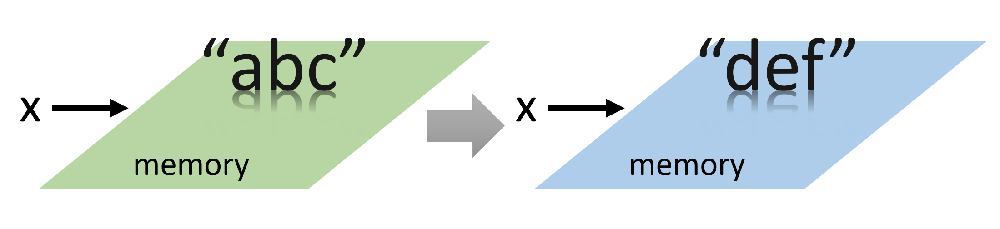
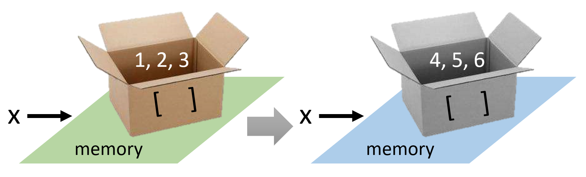
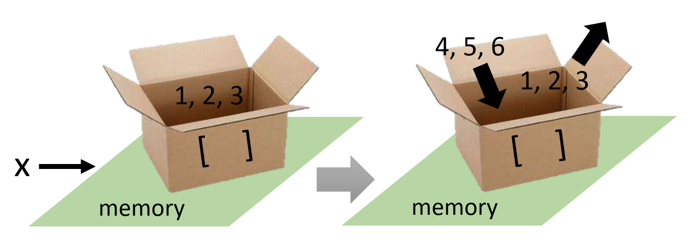
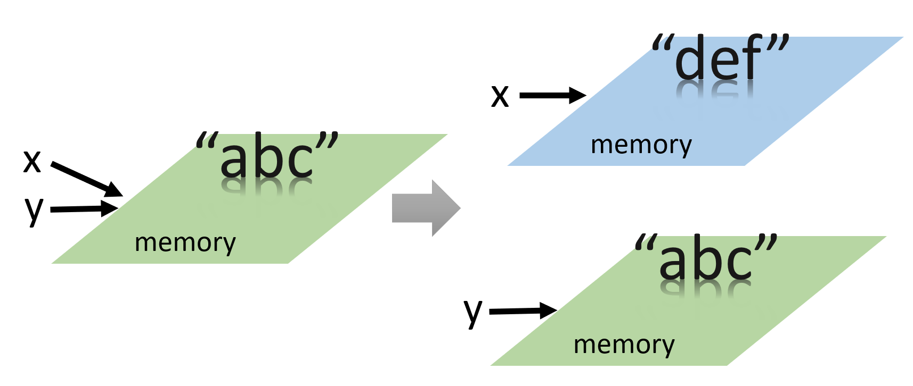
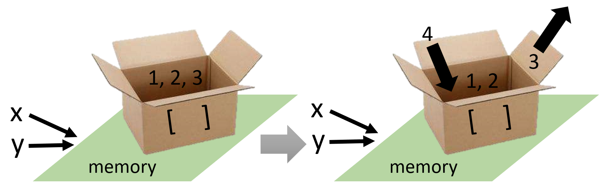
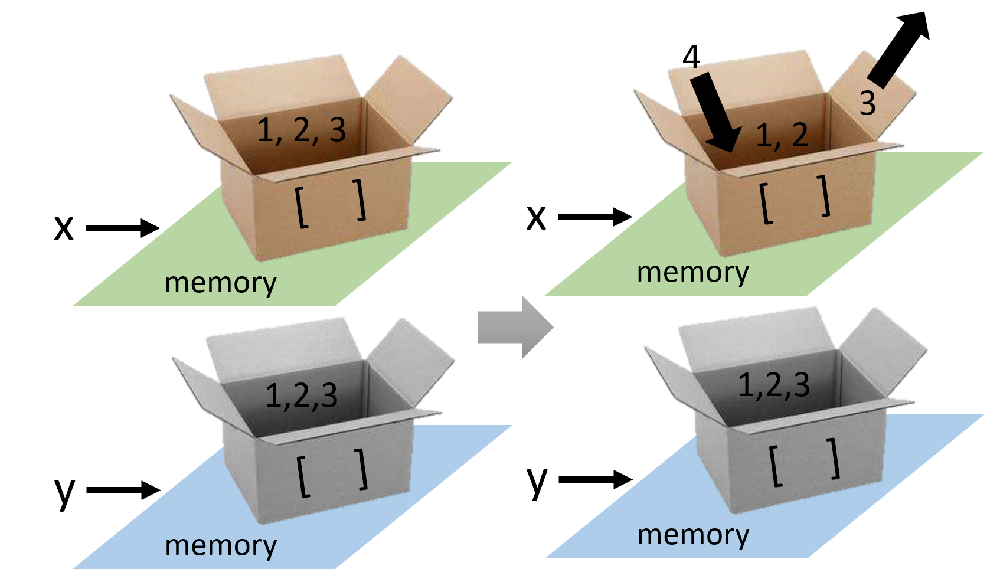

A dictionary is like a list, but more general. In a list, the index positions have to be integers; in a dictionary, the indices can be (almost) any type. You can think of a dictionary as a mapping between a set of indices (which are called keys) and a set of values. In general, the order of items in a dictionary is unpredictable.
>>> x = {'one':'apple','two':'banana','three':'orange'}
>>> print(x['two'])
'banana'
>>> len(x)
3
>>> x = {} #This is False
The in operator is used to check whether a specified key exists in a dictionary. It returns True if the key is present in the dictionary and False otherwise. To check if a value exists, you must explicitly search in dictionary.values().
>>> x = {'one': 'apple', 'two': 'banana', 'three': 'orange'}
>>> print('one' in x)
True
>>> print('uno' in x)
False
>>> print('orange' in x.values())
True
To create a dictionary, start with an empty one, and add the key-value pairs. The keys should be immutable and there is no repeated key. Lists or dictionaries cannot be keys.
>>> alien = {}
>>> alien['color'] = 'green'
>>> alien['points'] = 5
>>> print(alien)
{'color': 'green', 'points': 5}
Modifying and Removing Values in a Dictionary
>>> alien['color'] = 'yellow'
>>> print(alien)
{'color': 'yellow', 'points': 5}
>>> del alien['points']
>>> print(alien)
{'color': 'yellow'}
Merge two dictionaries
>>> a = { 'x' : 1 , 'y' : 2 }
>>> b = { 'z' : 4 }
>>> print(a|b)
{'x': 1, 'y': 2, 'z': 4}
>>> a = { 'x' : 1 , 'y' : 2 }
>>> b = { 'y' : 3 , 'z' : 4 }
>>> print(a|b)
{'x': 1, 'y': 3, 'z': 4}
>>> stuff = {}
>>> dir(stuff)
['__class__', '__class_getitem__', '__contains__', '__delattr__', '__delitem__',
'__dir__', '__doc__', '__eq__', '__format__', '__ge__', '__getattribute__',
'__getitem__', '__gt__', '__hash__', '__init__', '__init_subclass__', '__ior__',
'__iter__', '__le__', '__len__', '__lt__', '__ne__', '__new__', '__or__',
'__reduce__', '__reduce_ex__', '__repr__', '__reversed__', '__ror__',
'__setattr__', '__setitem__', '__sizeof__', '__str__', '__subclasshook__',
'clear', 'copy', 'fromkeys', 'get', 'items', 'keys', 'pop', 'popitem',
'setdefault', 'update','values']
>>> help(type(stuff).get)
Help on method_descriptor:
get(self, key, default=None, /)
Return the value for key if key is in the dictionary, else default.
>>> counts = { 'chuck' : 1 , 'annie' : 42, 'jan': 100}
>>> print(counts.get('jan', 0)) #0 is the default value
100
>>> print(counts.get('anni', 1550))
1550
word_list = ['b','a','n','a','n','a']
d = {}
for c in word_list:
d[c] = d.get(c,0) + 1
print(d)
{'b': 1, 'a': 3, 'n': 2}
favorite={'jen':'python','sarah':'c','edward':'ruby'}
for x, y in favorite.items():
print(x, y)
# Looping through all key-value pairs
jen python
sarah c
edward ruby
for y in favorite.values():
print(y)
# Looping through all values
python
c
ruby
for x in favorite.keys():
print(x)
# Looping through all keys
jen
sarah
edward
You can nest a set of dictionaries inside a list, a list of items inside a dictionary, or even a dictionary inside another dictionary. A list or a dictionary cannot be the key (The key should be immutable).
Dictionaries in a list
alien_0 = {'color': 'green', 'points': 5}
alien_1 = {'color': 'yellow', 'points': 10}
alien_2 = {'color': 'red', 'points': 15}
aliens = [alien_0, alien_1, alien_2]
A List in a Dictionary
pizza = {
'crust': 'thick',
'toppings': ['mushrooms', 'extra cheese'],
}
print(pizza['crust'], pizza['toppings'][1])
thick extra cheese
A dictionary in a dictionary
users = {
'aeinstein': {
'first': 'albert',
'last': 'einstein',
'location': 'princeton',
},
'mcurie': {
'first': 'marie',
'last': 'curie',
'location': 'paris',
},
}
full_name = users['aeinstein']['first']+" "+users['aeinstein']['last']
location = users['aeinstein']['location']
print(full_name)
print(location)
albert Einstein
princeton
Elements are key-value pairs. Empty dictionary is {}.
Features: lists or dictionaries cannot be keys. Do not make repeated keys.
The "in" operator works on keys (but you can use .values())
Method: get (value or default value)
Looping: .items(), .keys(), .values()
Nesting: A list of dictionaries, a list in a dictionary, a dictionary in a dictionary
Step 1: Create a list containing dictionaries
print("简易记账本(March)")
March = []
for date in range(31):
March.append({})
Step 2: Require users to enter the date
day = int(input("请问输入几号的开销？\n"))
Step 3: Enter the expenses one by one
print("请输入每一笔开销，结束请输入0:\n")
while True:
each = float(input("请输入金额:\n"))
if each == 0:
break
else:
type = input("请选择类型: a.衣 b.食 c.住 d.行 e.其他\n")
March[day-1][type] = March[day-1].get(type,0) + each
print("记录成功\n")
while True:
day = int(input("请问输入几号的开销？结束请输入0:\n"))
if day == 0:
break
else:
# all the programs in Step 3
indentation: select programs, tab (or space)
total=0
for each_day in March:
total += sum(each_day.values())
print("总支出：", total)
st = {}
category = ['a', 'b', 'c', 'd', 'e']
for type in category:
for each_day in March:
st[type] = each_day.get(type,0)+st.get(type,0)
print("衣：", st['a'], "食：", st['b'])
print("住：", st['c'], "行：", st['d'])
print("其他：", st['e'])
Lists and tuples are similar, with the only difference being that tuples are immutable (不可变).
>>> t = ('a', 'b', 'c', 'd', 'e')
>>> t = () #Empty tuple is False
To create a tuple with a single element, you have to include the final comma:
>>> t1 = ('a',)
>>> type(t1)
tuple
>>> t2 = ('a')
>>> type(t2)
str
Because tuples are immutable, they can be used as dictionary keys.
>>> d = {}
>>> d[('Taylor', 'Swift')] = 100
>>> print(d)
{('Taylor', 'Swift'): 100}
Most list operators also work on tuples. (编号：从零开始；切片：左闭右开)
>>> t = ('a', 'b', 'c', 'd', 'e')
>>> print(t[0])
'a'
>>> print(t[1:3])
('b', 'c')
Tuples cannot be directly assigned or modified; they can only be recreated. (修改：重新创建)
>>> t[0] = 'A'
TypeError: object doesn't support item assignment
>>> t = ('A',) + t[1:]
>>> print(t)
('A', 'b', 'c', 'd', 'e')
If you want to modify a tuple, you can convert it to a list, and then convert it back.
>>> t = ('a', 'b', 'c', 'd', 'e')
>>> s = list(t)
>>> s[0] = 'A'
>>> t = tuple(s)
Tuples and strings are compared and sorted lexicographically, element by element (the same for lists).
>>> (0, 1, 2000000) < (0, 3, 4)
True
>>> t = [(2, 4), (0, 1, 2), (0, 3, 4)]
>>> t.sort()
>>> print(t)
[(0, 1, 2), (0, 3, 4), (2, 4)]
Multiple assignment (the same for lists)
>>> m = ('have', 'fun')
>>> x, y = m #(x, y) = m
>>> print(x, y)
have fun
>>> x, y = y, x #swap
The in operator (the same for lists)
>>> t = ('a', 'b', 'c', 'd', 'e')
>>> print('a' in t)
True
Iteration with multiple values (the same for list of lists, tuple of lists)
t = [('a',1), ('b',2), ('c',3)]
# t = [['a',1], ['b',2], ['c',3]]
# t = (('a',1), ('b',2), ('c',3))
for x, y in t:
print(x)
print(y)
# for x in t?
If you want to modify a list inside a tuple, you can directly assign a new value to an individual element of the list. However, you cannot directly assign a new list to replace the existing one in the tuple.
>>> t = ('a', 'b', ['A', 'B'])
>>> t[2][0] = 'X'
>>> t[2][1] = 'Y'
>>> t
('a', 'b', ['X', 'Y'])
>>> t = ('a', 'b', ['A', 'B'])
>>> t[2] = ['X', 'Y']
TypeError: 'tuple' object does not support item assignment
The element can be any type. The empty is ().
Features: Ordered, Repeatable, Immutable
The indices start at 0. Index -1 means the last item. (编号：从零开始）
In slicing, the start is inclusive, and the end is exclusive. (切片：左闭右开)
You cannot modify the elements of a tuple by assignment.（修改：重新创建）
Comparing, multiple assignment, in operator (tuple and list)
Nesting of lists and tuples. Tuples can be keys of a dictionary.
1. Assignment: variable $\rightarrow$ computer memory $\rightarrow$ object

2. Modification
>>> x = "abc"
>>> x = "def"

a. make a new assignment
>>> x = [1,2,3]
>>> x = [4,5,6]

b. make a modification by methods for lists. You do not change the address.
>>> x = [1,2,3]
>>> x.pop()
>>> x.pop()
>>> x.pop()
>>> x.append(4)
>>> x.append(5)
>>> x.append(6)

3. Pass by Value
>>> x = "abc"
>>> y = x
>>> x = "def"
>>> print(y)
"abc"

>>> x = [1,2,3]
>>> y = x
>>> x.pop(2)
>>> x.append(4)
>>> print(y)
[1,2,4]

>>> x = [1,2,3]
>>> y = x.copy()
>>> x.pop(2)
>>> x.append(4)
>>> print(y)
[1,2,3]
